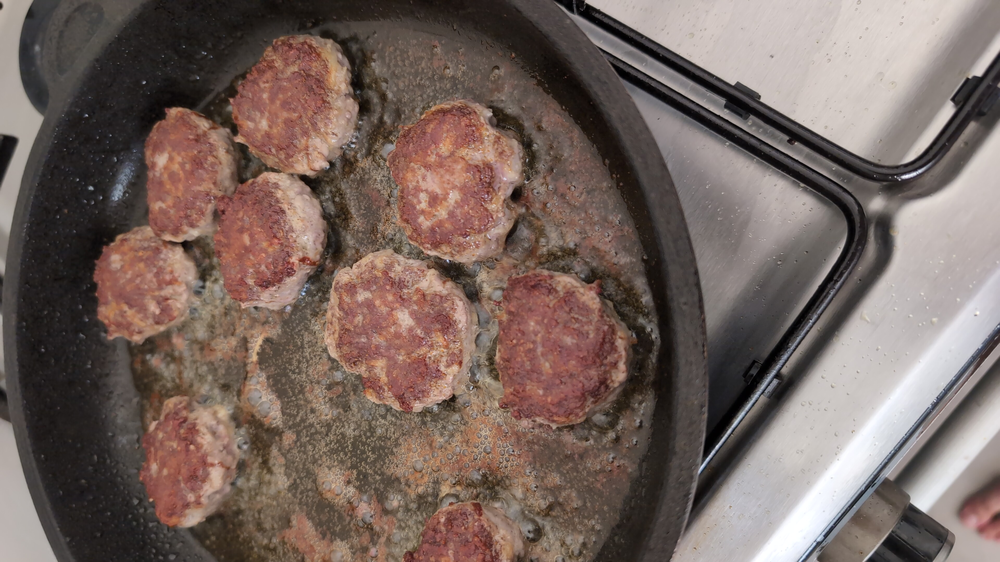

מגרדים תפוח אדמה לתוך קערה הכי קטן שאפשר וסוחטים ממנו את המיץ
מגרדים את הבצל
מוסיפים את הבשר הטחון, הביצה וכל התבלינים ומערבבים היטב
שמים שכבה דקה של שמן קנולה על המחבת עם כורכום
מבשלים את הקציצות על אש בינונית
הופכים ומוציאים כשמוכן
זמן הכנה: 20 דקות
זמן המתנה: ללא

רשימת מצרכים:
חצי קילו בשר טחון (בקר)
תפוח אדמה אחד בינוני-קטן
בצל בינוני
ביצה
כמון כפית שטוחה, מלח כפית שטוחה, מעט פלפל, קצת כורכום
אפשר קצת אבקת צילי חריף אם רוצים
“Cooking is like painting or writing a song. Just as there are only so many notes or colors, there are only so many flavors - it’s how you combine them that sets you apart.”